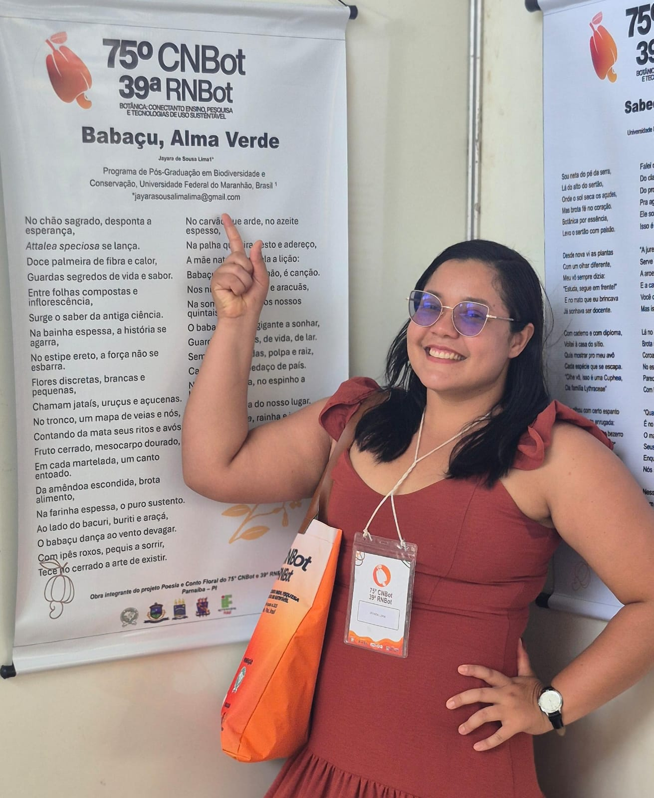
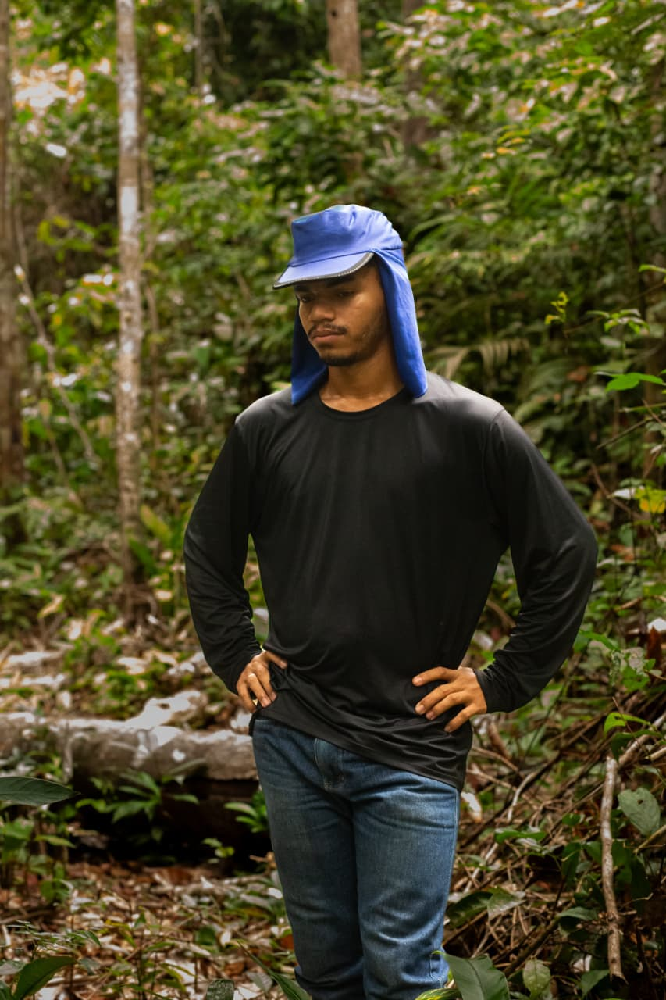
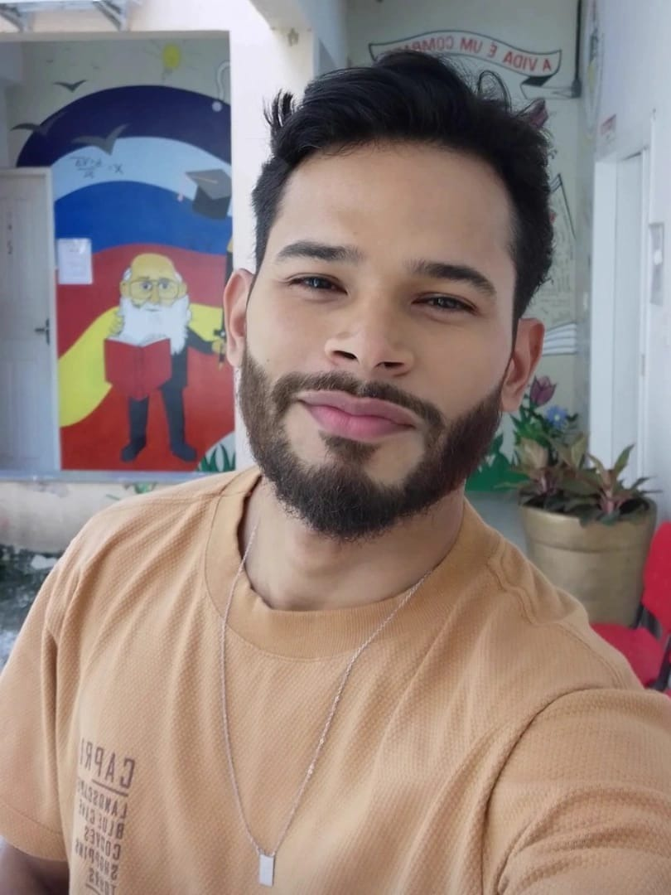
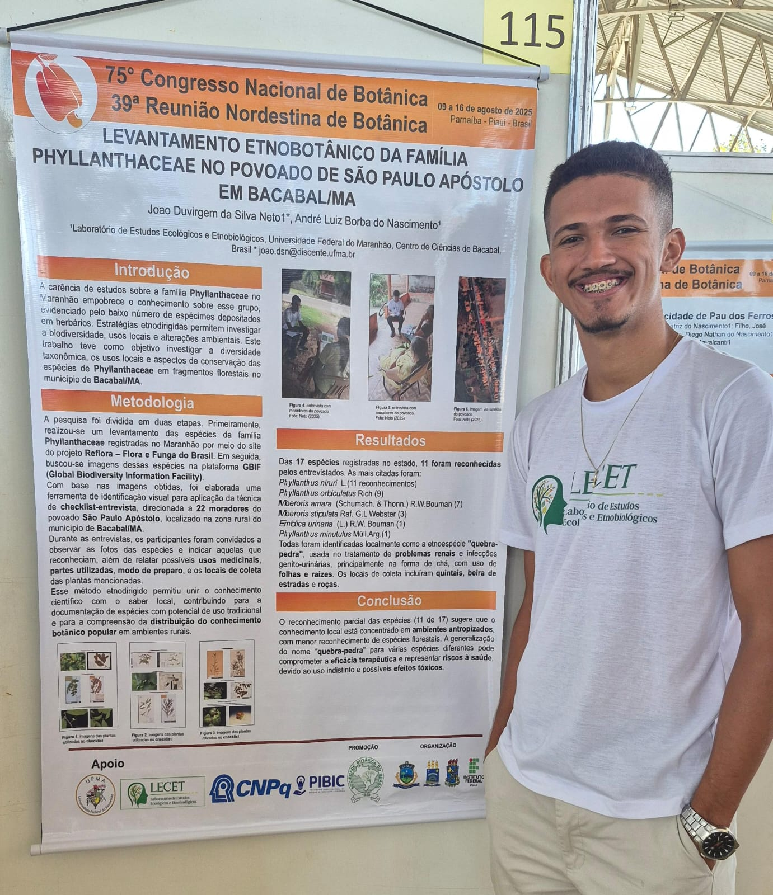
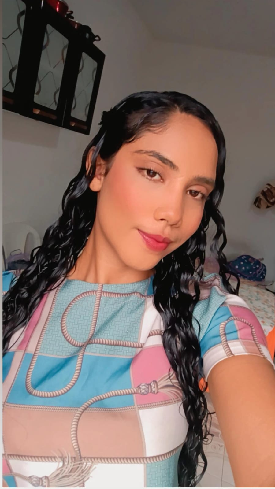
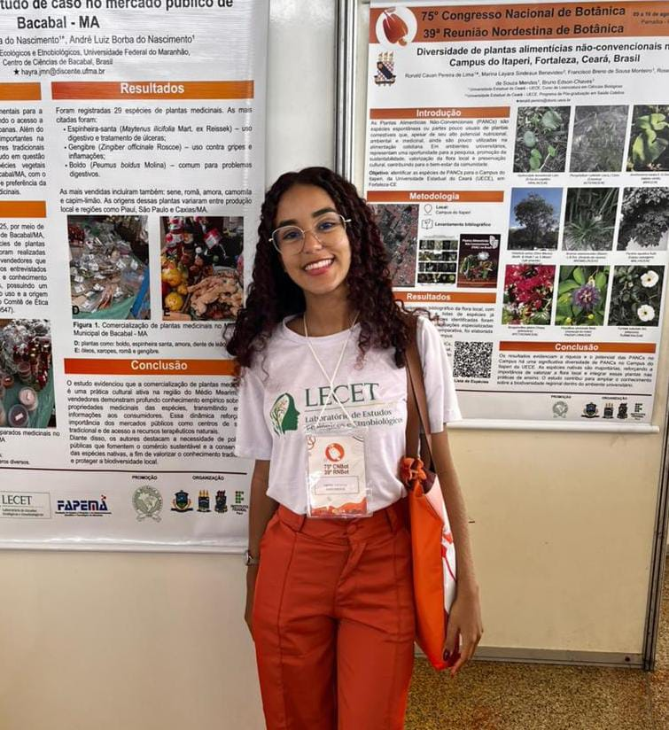

Explorando saberes tradicionais e a biodiversidade vegetal.
Grupo multidisciplinar que investiga as relações entre pessoas, plantas e ambiente, articulando pesquisa, ensino e extensão para promover ciência cidadã, conservação e educação ambiental no Maranhão, atuando principalmente na região da Amazônia Maranhense..
Atuamos de forma integrada em projetos de campo e de laboratório em ecologia e etnobotânica; promovemos a formação discente (PIBIC, TCC, especialização, mestrado, e mentoria contínua); realizamos ações em escolas e comunidades (como hortas de plantas medicinais, oficinas e feiras de ciência); participamos de eventos científicos com apresentações e organização de atividades; ofertamos oficinas e minicursos sobre sociobiodiversidade brasileira e educação ambiental; e produzimos e divulgamos conhecimento por meio de publicações científicas e de extensão, incluindo cartilhas, livros, artigos e resumos de congresso.
Estudo das propriedades terapêuticas de plantas usadas por comunidades tradicionais, quilombolas, quintais urbanos e mercados públicos.
Desenvolvimento e avaliação de estratégias didáticas inovadoras que promovam o aprendizado significativo sobre a diversidade vegetal, seus usos e sua importância ecológica e sociocultural.
Pesquisa sobre manejo sustentável e saberes agrícolas indígenas e rurais.
Avaliação do impacto humano e estratégias para a conservação da flora nativa.
Coordenador do Laboratório, Licenciado em Biologia (UFPE), Mestre em Ecologia (UFRPE) e Doutor em Botânica (UFRPE) Professor da UFMA, Campus de Bacabal, com experiência na área de Etnobiologia, principalmente em sistemas médicos locais, ecologia humana e conservação.

Pesquisadora do Laboratório Bióloga, Especialista em Educação Ambiental e Sustentabilidade, Perita Ambiental e Mestra em Biodiversidade e Conservação pela UFMA.

Pesquisador do Laboratório, mestrando em biodiversidade e conservação, com foco em etnobotânica de plantas medicinais e alimentícias.
Pesquisador do Laboratório, Licenciado em Ciências Biológicas (IFMA) e Mestrando em Biodiversidade e Conservação (UFMA), Pesquisa os efeitos das Mudanças Ambientais sobre a Meliponicultura nos Lençóis Maranhenses..

Pesquisador do Laboratório, Graduado em Licenciatura em Ciências Naturais – Biologia pela Universidade Federal do Maranhão. Mestrando no Programa de Pós-Graduação em Biodiversidade e Conservação/UFMA. Desenvolve pesquisas na área da etnobiologia, com foco no uso de plantas medicinais por comunidades quilombolas.

Pesquisador do Laboratório e Graduando em Ciências Naturais - Biologia (UFMA CCBa) Projeto: Levantamento etnobotânico da família Phyllanthaceae no povoado de São Paulo Apóstolo em Bacabal - Ma.

Pesquisadora do Laboratório, Bolsista de Iniciação Científica. e Graduando em Ciências Naturais - Biologia (UFMA ССВа) Projeto: Variação intracultural do conhecimento de plantas medicinais no povoado de São Paulo Apóstolo em Bacabal (Ma).

Pesquisadora do Laboratório Bolsista de Iniciação Científica. Área: Ciências Biologicas / Botânica Projeto: Diversidade e Frequência de Comercialização de Plantas Medicinais: Um Estudo de Caso no Mercado Público de Bacabal - MA.
Gostaria de falar com o laboratório? Preencha o formulário no link abaixo e entraremos em contato com você.
Acessar Formulário